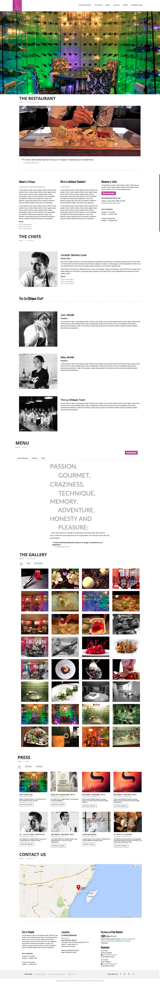

Summary: LeChique Restaurant is an acclaimed restaurant for the Karisma Hotels & Resorts hotel collection. Located in Azul Beach Resorts, it’s won awards from around the world for its culinary expressions, presentation and gastronomy concept.
Traffic overview: 5k to 7k visits per month.
Year: 2014
Role: Web & UX Designer
The Pain Points:
Goals for project:
Final Preview:
Opportunities achieved:
Results:
This was a unique project where I incorporated my personal experiences of LeChique and incorporated into the design. They were excited all marks were checked as well as the inclusion of the booking feature. This first draft heavily influenced the final design and product.